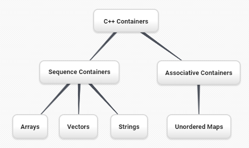
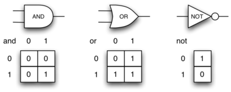

In this section we introduce another important aspect of object-oriented programming. Inheritance is the ability for one class to be related to another class in much the same way that people can be related to one another. Children inherit characteristics from their parents. Similarly, C++ child classes can inherit characteristic data and/or behaviors from a parent class. The child classes are often referred to as subclasses or derived classes, and the parent class is often called the base class or superclass.
Figure1.13.1 shows the built-in C++ collections and their relationships to one another. We call a relationship structure such as this an inheritance hierarchy. For example, the string is a child of the sequential collection. In this case, we call the string the child and the sequence the parent (or subclass string and superclass sequence). This is often referred to as an IS-A Relationship (the string IS-A sequential collection). This implies that strings inherit important characteristics from sequences, namely the ordering of the underlying data and operations such as concatenation, repetition, and indexing.

Figure1.13.1.An Inheritance Hierarchy for C++ Collections
Vectors, arrays, and strings are all types of sequential collections. They all inherit common data organization and operations. However, each of them is distinct as well. The children all gain from their parents but distinguish themselves by adding additional characteristics.
By organizing classes in this hierarchical fashion, object-oriented programming languages allow previously written code to be extended to meet the needs of a new situation. In addition, by organizing data in this hierarchical manner, we can better understand the relationships that exist. We can be more efficient in building our abstract representations.
A child class inherits both behaviors and properties from the parent subject to some access restrictions. These variables and functions become members of the derived class. A virtual function (also known as a virtual method) is a member function that is declared within a base class and is designed to be overridden by a derived class. For this in C++, the keyword virtual is used. A simple example of using a virtual function in C++ is shown in Listing1.13.2. In this example, the two derived subclasses inherit the printType method from the Base class.
#include <iostream>
using namespace std;
class Base {
public:
virtual void printType() { // Creates function called printType
subfunction();
cout << "I'm inherited!" << endl << endl;
}
virtual void subfunction(){
// empty
}
};
class SubFirst : public Base {
virtual void subfunction() {
cout << "I'm one type of sub-class!" << endl;
}
};
class SubSecond : public Base {
virtual void subfunction() {
cout << "I'm another type of sub class!" << endl;
}
};
int main() {
SubFirst first; // runs subfirst class using printType virtual function
first.printType(); // calls Subfirst class, and runs virtual function on it's own
SubSecond second; // runs subsecond class using printType virtual function
second.printType(); // calls Subsecond class, and runs virtual function on it's own
return 0;
}
Listing1.13.2.
Subsection1.13.1Logic Gates and Circuits
To explore this idea further, we will construct a simulation, an application to simulate digital circuits. The basic building block for this simulation will be the logic gate. These electronic switches represent Boolean algebra relationships between their input and their output. In general, gates have a single output line. The value of the output is dependent on the values given on the input lines.
AND gates have two input lines, each of which can be either 0 or 1, representing false or true, respectively. If both of the input lines have the value 1, the resulting output is 1. However, if either or both of the input lines is 0, the result is 0. OR gates also have two input lines and produce a 1 if one or both of the input values is a 1. In the case where both input lines are 0, the result is 0.
NOT gates differ from the other two gates in that they only have a single input line. The output value is simply the opposite of the input value. If 0 appears on the input, 1 is produced on the output. Similarly, 1 produces 0. Figure1.13.3 shows how each of these gates is typically represented. Each gate also has a truth table of values showing the input-to-output mapping that is performed by the gate.

Figure1.13.3.Three Types of Logic Gates
By combining these gates in various patterns and then applying a set of input values, we can build circuits that have logical functions. Figure1.13.4 shows a circuit consisting of two AND gates, one OR gate, and a NOT gate. The output lines from the two AND gates feed directly into the OR gate, and the resulting output from the OR gate is given to the NOT gate. If we apply a set of input values to the four input lines (two inputs for each AND gate), the values are processed and a result appears at the output of the NOT gate. Figure1.13.4 also shows an example with values.
Figure1.13.4.Circuit
In order to implement a circuit such as Figure1.13.5, we will first build a representation for logic gates. Logic gates are easily organized into a class inheritance hierarchy as shown in Figure1.13.6. At the top of the hierarchy, the LogicGate class represents the most general characteristics of logic gates: namely, a label for the gate and an output line. The next level of subclasses breaks the logic gates into two families, those that have one input line and those that have two. Below that, the specific logic functions of each appear.
Figure1.13.5.
Figure1.13.6.An Inheritance Hierarchy for Logic Gates
We can now start to implement the classes by starting with the most general, LogicGate. As noted earlier, each gate has a label for identification and a single output line. In addition, we need methods to allow a user of a gate to ask the gate for its label.
The other behavior that every logic gate needs is the ability to know its output value. This will require that the gate perform the appropriate logic based on the current input. In order to produce output, the gate needs to know specifically what that logic is. This means calling a method to perform the logic computation. The complete class is shown in Task1.13.1.a.
A protected member variable or function is similar to a private member but it has the additional benefit that they can be accessed by derived classes. The access keyword protected is used for this.
At this point, we will not implement the performGateLogic function. The reason for this is that we do not know how each gate will perform its own logic operation. Those details will be included by each individual gate that is added to the hierarchy. This is a very powerful idea in object-oriented programming. We are writing a method that will use code that does not exist yet. The parameter virtual is a reference to the actual gate object invoking the method. Any new logic gate that gets added to the hierarchy will simply need to implement the performGateLogic function and it will be used at the appropriate time. Once done, the gate can provide its output value. This ability to extend a hierarchy that currently exists and provide the specific functions that the hierarchy needs to use the new class is extremely important for reusing existing code.
We categorized the logic gates based on the number of input lines. The AND gate has two input lines. The OR gate also has two input lines. NOT gates have one input line. The BinaryGate class will be a subclass of LogicGate and will add two input lines. The UnaryGate class will also subclass LogicGate but will have only a single input line. In computer circuit design, these lines are sometimes called pins so we will use that terminology in our implementation.
Exploration1.13.2.Implementation of BinaryGate.
(a)C++ implementation.
class BinaryGate : public LogicGate {
public:
BinaryGate(string n) : LogicGate(n) { // When we create an instance of
// BinaryGate, data inherited from LogicGate are initialized with n;
pinATaken = false;
pinBTaken = false;
}
bool getPinA() {
if (pinATaken==false) {
cout << "Enter Pin input for gate " << getLabel() << " : ";
cin >> pinA;
pinATaken = true;
}
return pinA;
}
bool getPinB() {
if (pinBTaken==false ) {
cout << "Enter Pin input for gate " << getLabel() << " : ";
cin >> pinB;
pinBTaken = true;
}
return pinB;
}
protected:
bool pinA;
bool pinATaken;
bool pinB;
bool pinBTaken;
};
(b)Python implementation.
class BinaryGate(LogicGate):
def __init__(self,n):
LogicGate.__init__(self,n)
self.pinA = None
self.pinB = None
def getPinA(self):
return int(input("Enter Pin A input for gate "+ self.getLabel()+"->"))
def getPinB(self):
return int(input("Enter Pin B input for gate "+ self.getLabel()+"->"))
class UnaryGate(LogicGate):
def __init__(self,n):
LogicGate.__init__(self,n)
self.pin = None
def getPin(self):
return int(input("Enter Pin input for gate "+ self.getLabel()+"->"))
Task1.13.2.a and Task1.13.3.a implement these two classes. The constructors in both of these classes start with an explicit call to the constructor of the parent class using the parents name method. When creating an instance of the BinaryGate class, we first want to initialize any data items that are inherited from LogicGate. In this case, that means the label for the gate. The constructor then goes on to add the two input lines (pinA and pinB). This is a very common pattern that you should always use when building class hierarchies. Child class constructors need to call parent class constructors and then move on to their own distinguishing data.
The only behavior that the BinaryGate class adds is the ability to get the values from the two input lines. Since these values come from some external place, we will simply ask the user via an input statement to provide them. The same implementation occurs for the UnaryGate class except that there is only one input line.
Now that we have a general class for gates depending on the number of input lines, we can build specific gates that have unique behavior. For example, the AndGate class will be a subclass of BinaryGate since AND gates have two input lines. As before, the first line of the constructor calls upon the parent class constructor (BinaryGate), which in turn calls its parent class constructor (LogicGate). Note that the AndGate class does not provide any new data since it inherits two input lines, one output line, and a label.
Exploration1.13.4.Implementation of AndGate.
(a)C++ implementation.
class AndGate : public BinaryGate {
public:
AndGate(string n) : BinaryGate(n) {};
virtual bool performGateLogic() {
bool a = getPinA();
bool b = getPinB();
if (a == 1 && b == 1) {
return true;
}
else {
return false;
}
}
};
(b)Python implementation.
class AndGate(BinaryGate):
def __init__(self,n):
super(AndGate,self).__init__(n)
def performGateLogic(self):
a = self.getPinA()
b = self.getPinB()
if a==1 and b==1:
return 1
else:
return 0
The only thing AndGate needs to add is the specific behavior that performs the Boolean operation that was described earlier. This is the place where we can provide the performGateLogic method. For an AND gate, this method first must get the two input values and then only return 1 if both input values are 1. The complete class is shown in Task1.13.4.a.
We can show the AndGate class in action by creating an instance and asking it to compute its output. The following session shows an AndGate object, gand1, that has an internal label "gand1". When we invoke the getOutput method, the object must first call its performGateLogic method which in turn queries the two input lines. Once the values are provided, the correct output is shown.
>>> AndGate gand2("gand2")
>>> gand2.getOutput()
Enter Pin A input for gate gand2: 1
Enter Pin B input for gate gand2: 1
1
>>> gand2.getOutput()
Enter Pin A input for gate gand2: 0
Enter Pin B input for gate gand2: 0
0
Listing1.13.7.
The same development can be done for OR gates and NOT gates. The OrGate class will also be a subclass of BinaryGate and the NotGate class will extend the UnaryGate class. Both of these classes will need to provide their own performGateLogic functions, as this is their specific behavior.
We can use a single gate by first constructing an instance of one of the gate classes and then asking the gate for its output (which will in turn need inputs to be provided). For example:
>>> g2 = OrGate("G2")
>>> g2.getOutput()
Enter Pin A input for gate G2->1
Enter Pin B input for gate G2->1
1
>>> g2.getOutput()
Enter Pin A input for gate G2->0
Enter Pin B input for gate G2->0
0
>>> g3 = NotGate("G3")
>>> g3.getOutput()
Enter Pin input for gate G3->0
1
Listing1.13.8.
Subsection1.13.2Building Circuits
Now that we have the basic gates working, we can turn our attention to building circuits. In order to create a circuit, we need to connect gates together, the output of one flowing into the input of another. To do this, we will implement a new class called Connector.
The Connector class will not reside in the gate hierarchy. It will, however, use the gate hierarchy in that each connector will have two gates, one on either end (see Figure1.13.9). This relationship is very important in object-oriented programming. It is called the HAS-A Relationship. Recall earlier that we used the phrase IS-A Relationship to say that a child class is related to a parent class, for example UnaryGate IS-A LogicGate.
Figure1.13.9.A Connector Connects the Output of One Gate to the Input of Another
Now, with the Connector class, we say that a Connector HAS-A LogicGate meaning that connectors will have instances of the LogicGate class within them but are not part of the hierarchy. When designing classes, it is very important to distinguish between those that have the IS-A relationship (which requires inheritance) and those that have HAS-A relationships (with no inheritance).
Listing1.13.11 shows the Connector class. The two gate instances within each connector object will be referred to as the fromgate and the togate, recognizing that data values will flow from the output of one gate into an input line of the next. The call to setNextPin is very important for making connections (see Listing1.13.11). We need to add this method to our gate classes so that each togate can choose the proper input line for the connection.
Figure1.13.10.Circit of NOT(AND(ganda,gnadb)OR AND(gandc,gandd))
#include <iostream>
#include <string>
using namespace std;
// creates a class with a logic gate that returns the label, and boolean value
class LogicGate {
public:
LogicGate(string n){
label = n;
}
string getLabel(){
return label;
}
bool getOutput(){
output = performGateLogic();
return output;
}
virtual bool performGateLogic(){
cout << "ERROR! performGateLogic BASE" << endl;
return false;
}
virtual void setNextPin(bool source) {
cout << "ERROR! setNextPin BASE" << endl;
}
private:
string label;
bool output;
};
//class that allows for the gates to have two inputs
class BinaryGate : public LogicGate {
public:
BinaryGate(string n) : LogicGate(n) {
pinATaken = false;
pinBTaken = false;
}
bool getPinA() {
if (pinATaken == false) {
cout << "Enter Pin A input for gate " << getLabel() << ": ";
cin >> pinA;
pinATaken = true;
}
return pinA;
}
bool getPinB() {
if (pinBTaken == false) {
cout << "Enter Pin B input for gate " << getLabel() << ": ";
cin >> pinB;
pinBTaken = true;
}
return pinB;
}
virtual void setNextPin(bool source) {
if (pinATaken == false) {
pinA = source;
this->pinATaken = true;
}
else if (pinBTaken == false) {
pinB = source;
this->pinBTaken = true;
}
}
private:
bool pinA, pinATaken, pinB, pinBTaken;
};
//allows for the creation of a logic gate with one input
class UnaryGate : public LogicGate {
public:
UnaryGate(string n) : LogicGate(n) {
pinTaken = false;
}
bool getPin() {
if (pinTaken == false) {
cout << "Enter Pin input for gate " << getLabel() << ": ";
cin >> pin;
pinTaken = true;
}
return pin;
}
virtual void setNextPin(bool source) {
if (pinTaken == false) {
pin = source;
pinTaken = true;
}
else {
return;
}
}
private:
bool pin, pinTaken;
};
//Class that sets up the logic for an "and" gate
class AndGate : public BinaryGate{
public:
AndGate(string n) : BinaryGate(n) {};
virtual bool performGateLogic(){
bool a = getPinA();
bool b = getPinB();
if (a == 1 && b == 1) {
return true;
}
else {
return false;
}
}
};
//class that sets up the logic for an "or" gate
class OrGate : public BinaryGate {
public:
OrGate(string n) : BinaryGate(n) {};
virtual bool performGateLogic() {
bool a = getPinA();
bool b = getPinB();
if (a == 1 || b == 1) {
return true;
}
else {
return false;
}
}
};
//class that sets up the logic for a "not" gate
class NotGate : public UnaryGate {
public:
NotGate(string n) : UnaryGate(n) {};
virtual bool performGateLogic() {
if (getPin()) {
return false;
}
else {
return true;
}
}
};
// class that sets up logic for the connection of one gate to another
class Connector{
public:
Connector(LogicGate *fgate, LogicGate *tgate) {
fromgate = fgate;
togate = tgate;
tgate->setNextPin(fromgate->getOutput());
}
LogicGate *getFrom() {
return fromgate;
}
LogicGate *getTo() {
return togate;
}
private:
LogicGate *fromgate, *togate;
};
int main() {
char stopme;
//Setting labels
AndGate gand1(" AND1 ");
AndGate gand2(" AND2 ");
OrGate gor3(" OR ");
NotGate gnot4(" NOT ");
// The inputs can be changed here!
gand1.setNextPin(0);
gand1.setNextPin(0);
gand2.setNextPin(0);
gand2.setNextPin(0);
//making comnnections
Connector c1(&gand1, &gor3);
Connector c2(&gand2, &gor3);
Connector c3(&gor3, &gnot4);
// The output shows order of operators
cout << gnot4.getLabel() << "(";
cout << "(" << gand1.getPinA() << gand1.getLabel() << gand1.getPinB() << ")";
cout << gor3.getLabel();
cout << "(" << gand2.getPinA() << gand2.getLabel() << gand2.getPinB() << ")";
cout << ") results in " << gnot4.getOutput() << endl;
cin >> stopme; //holds open window under some conditions.
return 0;
}
Listing1.13.11.
Reading QuestionsReading Questions
1.
What will the logic gate yield (1 / 0)?
2.
What is the difference between HAS-A and IS-A relationships? Select all that apply.
An IS-A class object is an instance of an inherited class.
Correct!
A HAS-A class object has all of the methods of another class.
No. HAS-A relationships do not mean that one class is copying another class.
An IS-A class object contains instances of another class.
No. IS-A relationships do not mean that an object contains different class instances.
A HAS-A class object is an instance of an inherited class.
No, HAS-A reltionships do not use inheritance.
A HAS-A class object contains instances of another class.
Correct!
Note1.13.12.Self Check Challenge.
One of the fundamental building blocks of a computer is something called a flip flop. Its not something that computer science professors wear on their feet, but rather a kind of circuit that is stable and stores the last piece of data that was put on it. A simple flip-flop can be made from two NOR gates (a combination OR and NOT) that are tied together as in the following diagram. Create a new gate class, called NorGate. NorGates work like OrGates that have a Not attached to the output. See if you can use your new class to implement this.
Note if the initial inputs to Reset and Set are both 0 then the output of the flip-flop is 0. But if the Set input is toggled to 1 then the output becomes 1. The great thing is that when the set input goes to 0 the output stays 1, until the reset input is toggled to 1 which resets the output of the circuit back to zero.